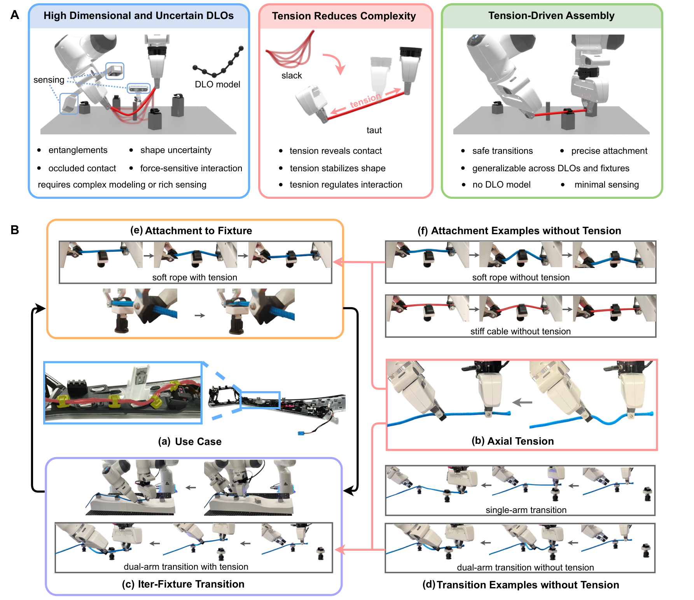
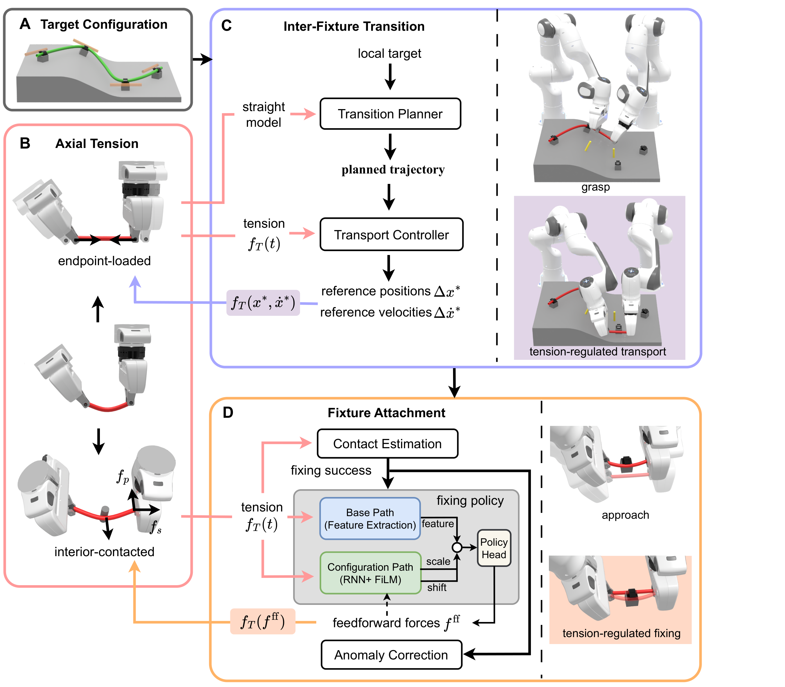
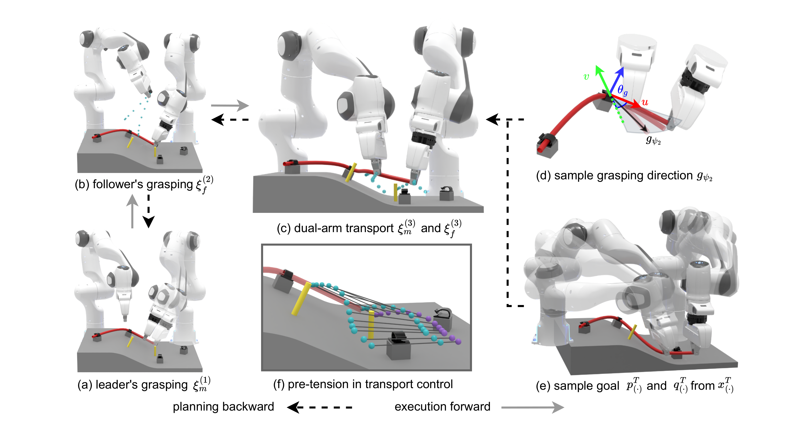
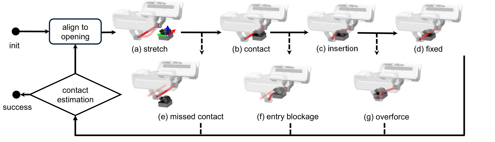
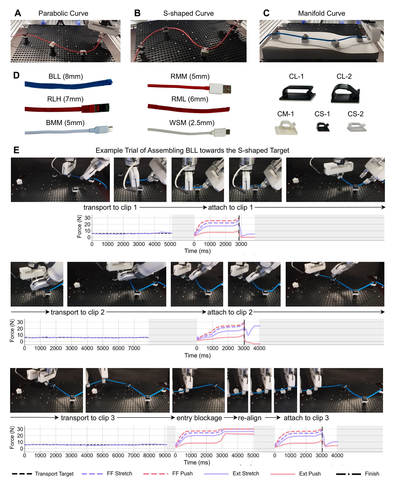

Master the Tension: Force-Driven Assembly of Deformable Linear Objects with Environmental Contacts
1Technical University of Munich, 2Nanjing University, 3Shanghai University, 4Tsinghua University
We show that actively regulating axial tension can reduce the effective complexity of manipulating cables, wires, and hoses, making contact-rich assembly more predictable and robust.
Abstract
Manipulation of deformable linear objects (DLOs), such as cables, wires, and hoses, is a significant task in industrial manufacturing, but remains a fundamental challenge for robots due to DLOs' high degrees of freedom and weakly constrained physical behavior. These challenges are further amplified in fixture-based assembly, where frequent contact with surrounding structures tightly couples deformation, rich contacts, and partial observability. Existing approaches typically manage this complexity either by predicting deformation with increasingly sophisticated models or by reacting to enriched sensory feedback.
In this work, we take an alternative perspective. Rather than accommodating the full complexity of deformable behavior, we show that the effective complexity of manipulation can be reduced by actively regulating the axial tension. Appropriate tension drives the DLO's interaction into a more constrained, predictable state, reducing deformation uncertainty and making contact responses more consistent.
Building on this insight, we propose a tension-regulated dual-arm manipulation framework for fixture-based DLO assembly, in which axial tension is continuously monitored and regulated as a unifying interaction principle across recurring inter-fixture transitions and fixture attachments. We validate the proposed framework on real-world cable assembly tasks that involve multiple target shapes, diverse DLOs, and clip-like fixtures of various materials and sizes.
Use Case and Key Insight

Fixture-based DLO assembly combines transport between local targets and force-sensitive attachment. Our central idea is to regulate axial tension as the interaction variable that structures both stages.
Method Overview

Tension is used as a shared principle across inter-fixture transition and fixture attachment, enabling collision-aware transport and reliable clip-style insertion with proprioceptive and tactile sensing.
Shape Alignment

Fixing Flow

Experimental Overview

Inter-Fixture Transition
During transport, mild tension keeps the manipulated segment taut enough for a simpler and more stable representation.
Fixture Attachment
Force-sensitive insertion behavior across diverse DLO and fixture combinations.
Full Assembly Experiments
End-to-end evaluations across multiple target shapes, DLOs, and clip-like fixtures.
BibTeX
@article{chen2026mastertension,
title={Master the Tension: Force-Driven Assembly of Deformable Linear Objects with Environmental Contacts},
author={Chen, Kejia and Bing, Zhenshan and Zhang, Yue and Wu, Yansong and Wu, Fan and Meng, Yuan and Huang, Yuhong and Yao, Xiangtong and Zhang, Yu and Sun, Zhenguo and Gao, Yang and Sun, Fuchun and Knoll, Alois},
journal={Submitted manuscript},
year={2026}
}